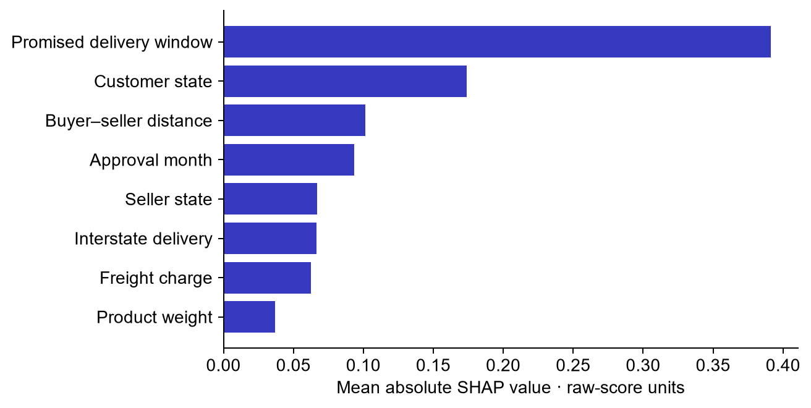
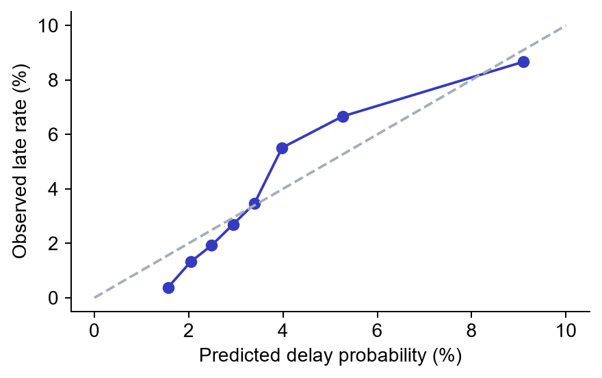

Delivery monitor & Model performance
履约监控、审核风险趋势、地区与商家异常；另有历史留出集上的策略对照、概率校准和分群表现。
打开 Dashboard →帮助履约运营看清异常，帮助客服确定跟进顺序。把审核时的风险预测，接入日常订单处理流程。
完全离线 · 无需安装软件或启动数据库 · 历史数据演示
课程与个人作品场景；未作为真实生产系统上线。
需求假设：订单较多、履约信息分散时，运营需要定位异常，客服需要明确处理顺序，并让后续人员看到跟进进展。项目使用公开历史数据验证风险选单，不将假设表述为真实用户访谈结论。
查看待送达、已逾期、临近到期和高风险订单；结合地区、商家、配送阶段定位异常。
Dashboard / Operations overview进入订单队列，筛选与搜索，查看承诺日期和配送时间线，更新处理状态及备注。
Order queue / View / Case progress已逾期 → 两天内到期 → 高风险 → 其他待送达。同类订单再按逾期天数和风险排序。
可解释、可执行的优先级规则建议体验：切换统计日期或地区 → 查看异常 → 打开 Order queue → 筛选逾期订单 → 点击 View → 保存一条跟进备注。离线页面使用完整的已评分订单快照，筛选、图表和排序在浏览器中重新计算。
历史测试集为 2018 年 5—7 月审核通过、已有最终送达结果的订单。每天选择约 10%，各策略共选 1,915 笔；随机策略取 50 次结果的平均值。
| 选单策略 | 捕获延迟订单 | 延迟订单召回率 | 捕获延迟商品金额 / BRL |
|---|---|---|---|
| 随机，50 次平均 | 72.66 | 10.1% | 11,607.74 |
| 短承诺窗口规则 | 73 | 10.2% | 9,286.76 |
| 风险优先：p(late) | 162 | 22.6% | 24,083.60 |
| 金额优先：p × value | 129 | 18.0% | 57,168.50 |
结论边界：证明了离线风险选单的有效性；没有证明客服跟进已降低延迟率、节省人力或提升满意度。金额优先用于分析对照，当前业务队列采用异常优先级与风险排序。

用 SHAP 解释模型依赖的特征。相关贡献不能直接解释为因果关系。

将预测概率分组后，与各组真实延迟比例比较；同时检查月份、地区和商家历史样本群体。
已完成真实数据建模、策略离线评价，以及总览—队列—详情—客服记录的功能实现。后续应邀请客服/运营完成任务测试，测量定位和记录耗时，并通过试点比较异常响应时长、记录完整率及最终履约指标。尚无真实用户访谈、线上 A/B 测试或经营收益的实证。
项目说明与需求文档根据现有成果整理；原型开发使用 AI 辅助，效果以历史数据评估为准。